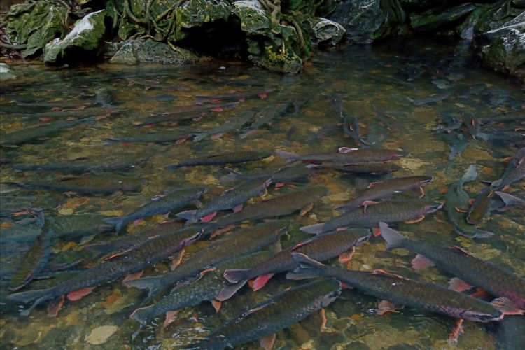

Địa chỉ: Bản Lương Ngọc - xã Cẩm Lương - huyện Cẩm Thủy - tỉnh Thanh Hóa.
Bản đồ: Xem Google Map
Nằm cách trung tâm thành phố Thanh Hóa chưa tới 80km theo hướng Tây Bắc, suối cá thần Cẩm Lương là món quà thiên nhiên ban tặng với cảnh quan tuyệt đẹp. Nơi đây có rừng, có sông suối, có bản làng và những người dân mến khách, hiền lành đã tạo nên một bức tranh làng quê yên bình, sơn thuỷ hữu tình.
Giữa bốn bề núi đá vôi dựng đứng, dòng suối này có chiều dài khoảng 100m, rộng chứng 3 - 4m, sâu 30 - 50cm nhưng lại là nơi có mật độ cá sinh sống rất lớn. Những con cá ở đây nặng từ 2kg đến 8kg, có con cá chúa còn nặng đến gần 30kg nữa đó. Hình thù các loài cá này rất lạ, đa dạng về màu sắc. Khi đàn cá lật mình bơi lội dưới ánh nắng mặt trời sẽ thay đổi liên tục với đa dạng màu sắc như màu xanh, màu đỏ, màu vàng, màu hồng….lấp lánh bạc. Đây chính là lý do mà chúng được gọi là cá thần. Theo dân gian lưu truyền, rằng nếu như ai chạm được tay vào cá sẽ gặp được nhiều điều may mắn bởi cá thần không cho người chạm vào mình. Nếu có hứng thú, bạn có thể thử xem “vận may” của mình thế nào nhé!
Khu du lịch suối cá thần Thanh Hóa mở cửa đón khách tham quan quanh năm nên bạn có thể đến đây vào bất cứ thời điểm nào trong năm. Thế nhưng, thời điểm lý tưởng nhất là vào mùa hè từ tháng 4 - tháng 9 hàng năm. Lúc này, bạn sẽ có cơ hội chiêm ngưỡng cá chúa bởi cá chúa chỉ xuất hiện khi nước dâng cao. Hơn nữa, mùa hè nước suối rất trong và mát, đàn cá xuất hiện lấp lánh dưới ánh mặt trời sẽ tạo ra một khung cảnh tuyệt vời hơn đấy. Theo tâm linh, suối cá thần Cẩm Lương đem lại sự may mắn nên bạn cũng có thể đi vào dịp đầu xuân.
Suối cá thần Cẩm Lương vừa là điểm du lịch Thanh Hóa, vừa là nơi linh thiêng nên bạn cần lưu ý một số điều sau đây để chuyến đi được trọn vẹn nhất nha:
Nguồn: Sưu tầm